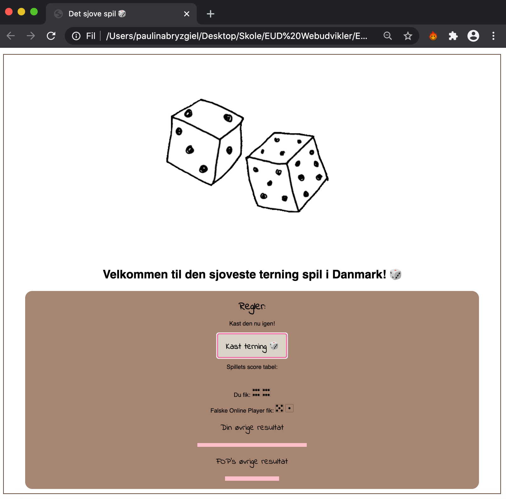
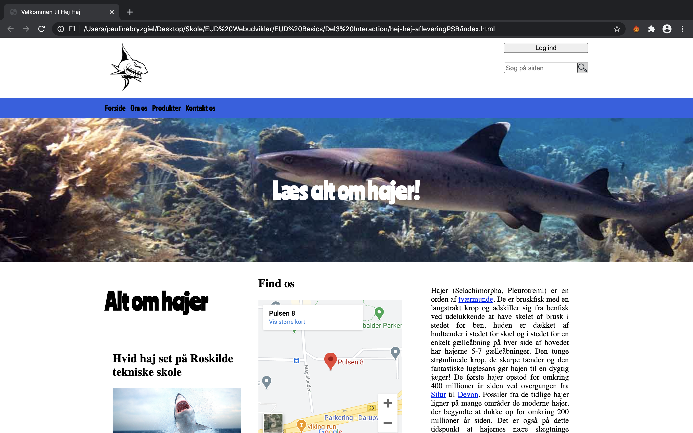
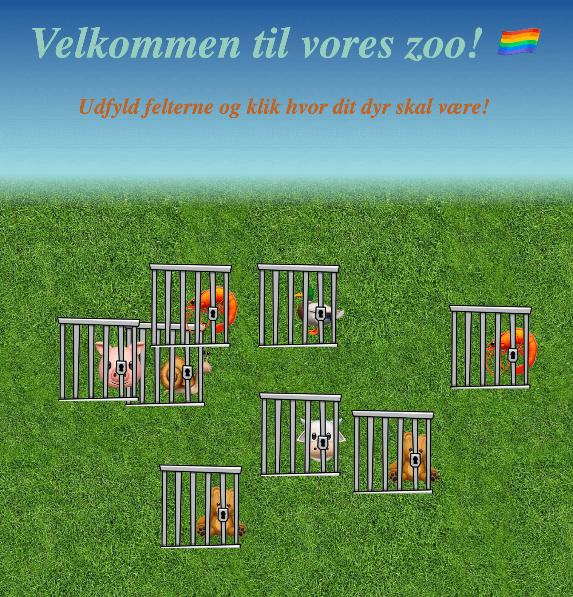
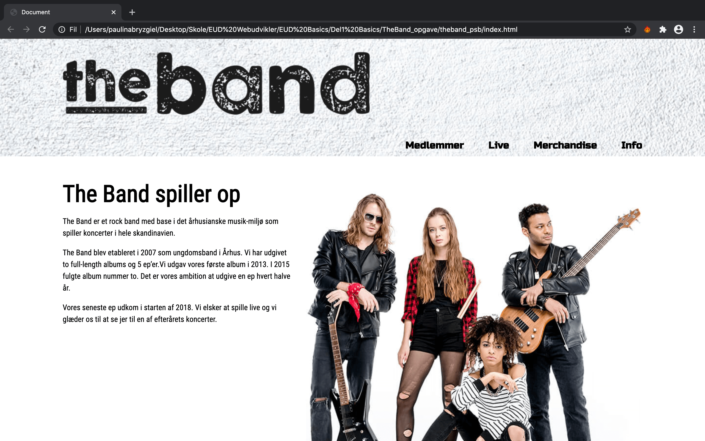
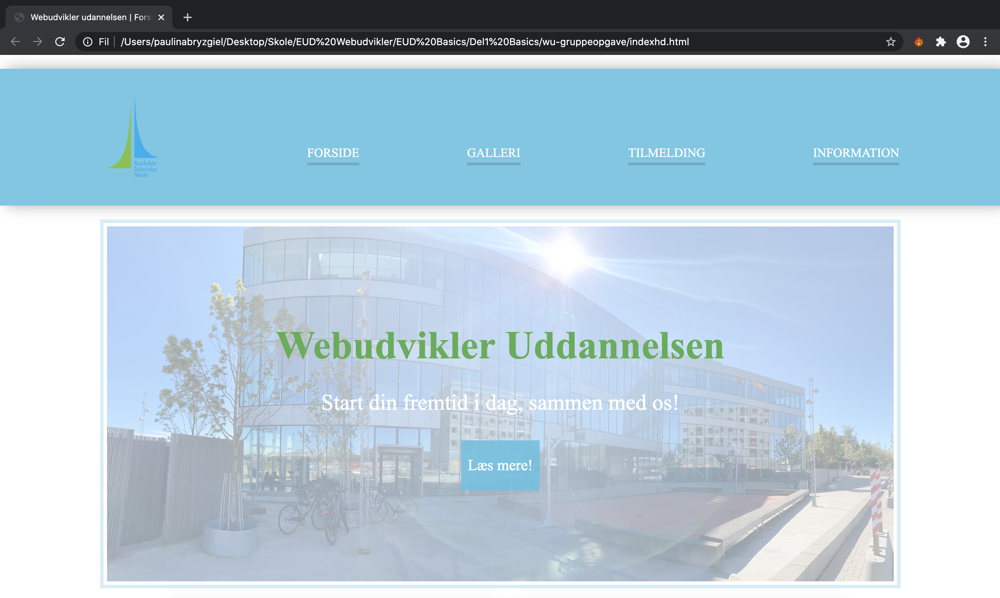
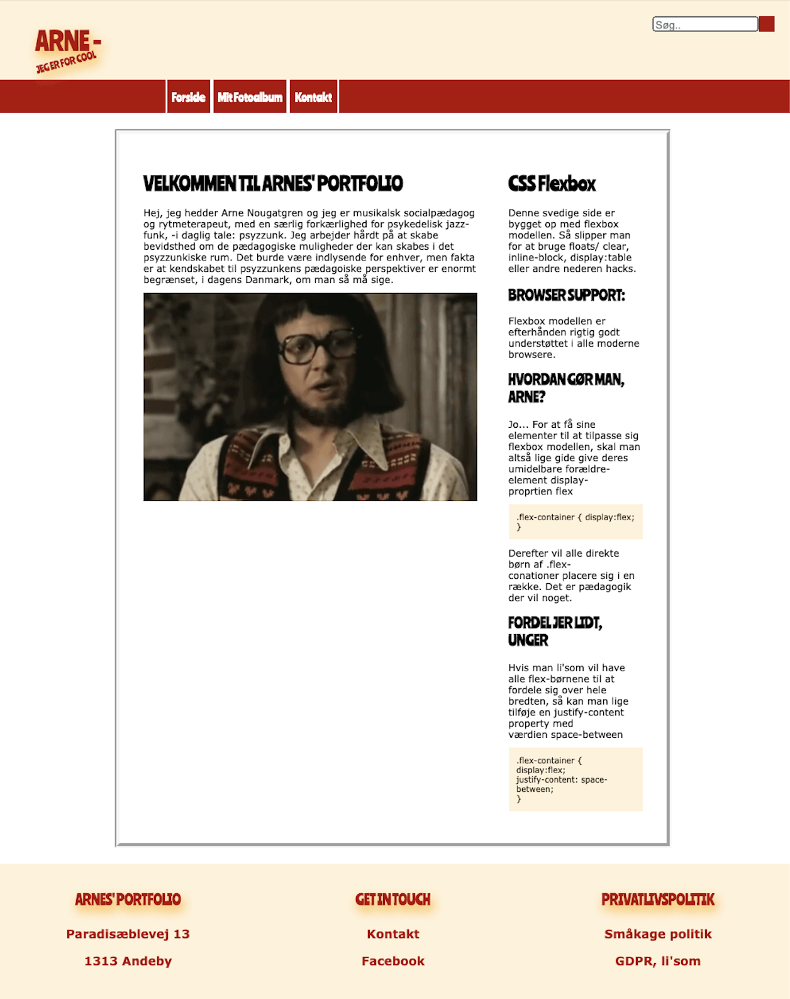
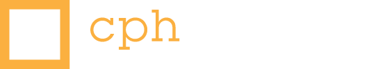
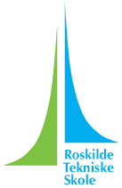

Fremstilling, bygning og opdatering/vedligeholdelse af hjemmesider. Med fokus på design, publicering og programmering. På min nuværende uddannelse udvikler jeg IT-relateret kompetencer, færdigheder og løsninger hver eneste dag. Kendskabet og flydendehed i HTML og CSS er stærke og skrider frem foreløbigt, hvor JavaScript er stadig en hverdags spændende udfordring.

⌈ Om mig ⌉
Velkommen til min portfolio!
Jeg hedder Pauline Holm og jeg er København-baseret webudvikling elev.
Udover det specialiserer jeg også i markedsføring og produkt og/eller forretningsudvikling.
Lad os skabe noget sammen!
⌊ Projekter ⌋






Altid i gang med at udvikle nye projekter 👩🏻💻
⌈ Uddannelsen ⌉


